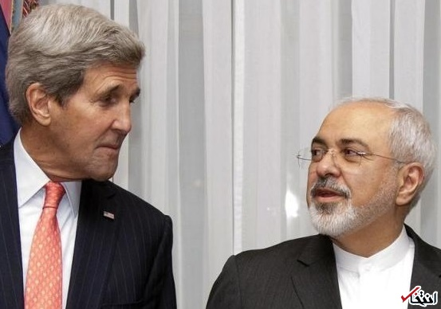

ظریف از ماجرای داد و فریاد خود بر سر جان کری می گوید: گاهی اوقات از کوره در رفتن اجتناب ناپذیر است / دوبار فریاد زدن ممکن است استرس انسان را کاهش داد
محمدجواد ظریف وزیر خارجه ایران در گفتگو با نیویورکر اظهار داشت: تدبیر حکم می کند که تمامی جناح ها به واقعیت ها در جهان توجه کنند که شما در آن قادر به انتخاب مخاطب خود نیستید. به گزارش سرویس بین الملل «انتخاب»، نیویورکر آورده است: هشت هفته ی آینده در عرصه دیپلماسی ممکن است دشوارترین دورانی باشد که ما در حوزه ی منع اشاعه تسلیحات هسته ای با آن مواجه بوده ایم. ظریف خود اذعان دارد که تاکنون لحظات بسیار دشواری را در مذاکرات تجربه کرده، بخصوص مذاکرات نهایی 9 ساعته با جان کری. وی به شوخی گفت که داد و فریاد و از کوره در رفتن در اینگونه گفتگوها اجتناب ناپذیر است. ظریف تصریح کرد: وقتی شما در مذاکراتی بی پایان مشارکت دارید، دوبار داد زدن ممکن است فشارها و استرس شما را کاهش دهد. وزیر خارجه ایران در ادامه گفت: هیچ دلیلی وجود ندارد که به توافق نرسیم. وی با اشاره به منتقدان مذاکرات هسته ای در ایران و آمریکا تاکید کرد: هرچه که شما برای آرام ساختن عده ای از مخاطبان انجام دهید، ممکن است برخی دیگر را آزرده خاطر کند. برای همین است که من حاضر به صدور فکت شیت نشدم. من معتقدم که نتیجه ی نهایی مذاکرات خود گویای این مسائل است.